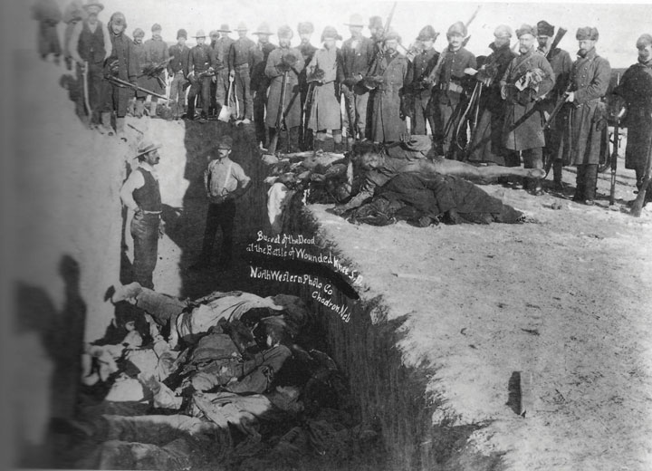
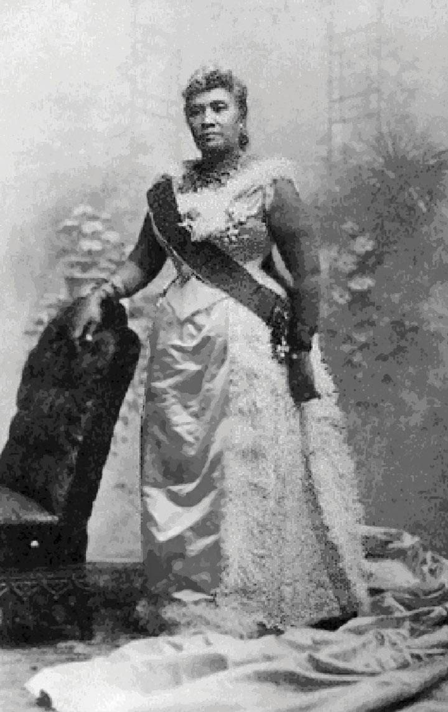
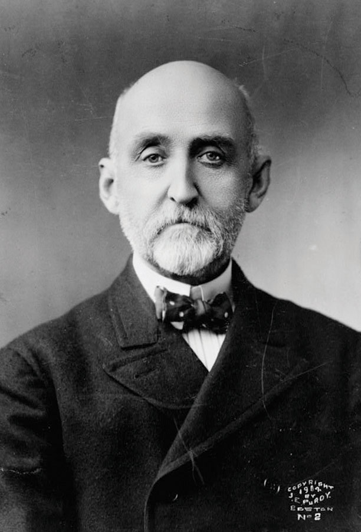
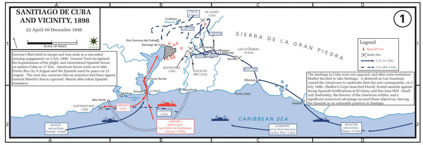

Imperialism refers to the establishment of dominant and exploitive relationships between a political entity, such as a nation, and another group or political entity such as a colony. The experiences of Native Americans are the clearest example of imperialism in US history. However, they are not often considered in this context because most people think of imperialism as involving foreign countries and they forget that Native Americans lived apart from the United States for most of their history. They also forget that treaties between the US government and Native Americans recognized individual tribes as sovereign nations. As a result, the creation of the reservation system and the acquisition of reservation land in violation of treaties are textbook examples of colonization. Between 1492 and the turn of the century, an estimated population of 7 to 10 million people had declined to just over 200,000 as a result of epidemic disease, massacres, and policies designed to promote either assimilation or extermination. Native lands were taken through conquest and incorporated into US territories, while Native Americans themselves were forced onto reservations and denied citizenship. Given the entire history of humankind, it would be hard to find any example that more perfectly fit the definition of imperialism.
As described in the previous chapter, Native Americans resistance had been rendered legally moot by the federal government and Supreme Court in the late nineteenth century. In addition, the federal government declared that 2 million acres of land in what was then known as “Indian Territory” would be opened for non-Indian settlement on a first-come basis. The government declared April 22, 1889, as the day settlers could enter parts of what eventually became the state of Oklahoma and stake their land claims. A second Oklahoma land rushA phrase that refers to the dramatic method of the distribution of federal lands that once belonged to Native Americans in Oklahoma. There were several land rushes that corresponded with each distribution of land. In each case, land seekers lined up across a border line and awaited a signal that released them to claim a section of land on a first-come basis. The first land rush occurred on April 22, 1889, and was followed by a second land rush in the Cherokee Strip on September 16, 1893. was established on September 16, 1893, in an area formerly known as the “Cherokee Strip.” On that day, an estimated 50,000 would-be settlers lined up on the border to begin a race to claim 42,000 homesteads. Advertisements for the land claimed that Native Americans “were rejoicing to have the whites settle up this country.”
Washington took our lands and promised to feed and support us. Now I, who used to control 5,000 warriors, must tell Washington when I am hungry. I must beg for that which I own…My heart is heavy. I am old, I cannot do much more.
—Sioux leader Red Cloud speaking on the effects of the reservation system as recalled by an anthropologist who spoke with Red Cloud during the revival of the Ghost Dance.
The severe depression of 1893 added high stakes to the drama of the land rush, which was signaled by firing a cannon at noon. Those who had promoted the area and hoped to stake claims were known as “Boomers,” while those who had illegally snuck into the territory to squat on choice sections of land were called “Sooners.” Law and order submitted to the avarice of land speculators and the desperation of the landless. Claimants often used weapons and violence to convince earlier settlers that they had actually arrived on a certain portion of land before the claimants had. As land offices began recording the first claims, thousands of disappointed would-be Boomers turned their wagons north. For many, their last best chance to own land had failed to materialize for want of speed or because they had been convinced by the business end of a revolver to abandon their claim.
Figure 3.25

An advertisement promoting lands in what would become Oklahoma. Notice how the poster claims that these lands were purchased by the government a year after the Civil War on behalf of former slaves. In actuality, a treaty was signed requiring the Choctaw and Chickasaw tribes to end slavery and provide land for slaves they had owned. These slaves were not given the land, and the federal government never paid for the land in question.
For those who lost out on the 1889 and 1893 land rushes, the Curtis Act of 1898 provided a third opportunity to take Indian land. This law removed the restrictions that had protected the Five Civilized Tribes of Oklahoma (Choctaw, Cherokee, Chickasaw, Muscogee, and Seminoles) from allotment in the original Dawes Act of 1887. The Curtis Act opened millions of acres throughout the next two decades. For those who were less interested in farm land, another cottage industry arose in Oklahoma. Practitioners of this trade unapologetically referred to themselves as “grafters.” The grafters sought to profit from the poverty of Native Americans by swindling them out of their remaining lands or at least the mineral and oil rights to those lands. In many ways, the discovery of oil and valuable natural resources on reservation land was history repeating itself. After all, the Cherokees had been forcibly removed from Georgia to Oklahoma in the 1830s after gold had been discovered on their lands. The discovery of oil in Oklahoma would have similar consequences.
Previous imperialistic policies divided the Lakota Sioux, now living on a fraction of their original reservation in the recently admitted state of South Dakota. Sioux tribal leader Red Cloud had finally acquiesced to a treaty that ceded the Black Hills to the federal government following the discovery of gold in that region. Another tribal leader named Crazy Horse rejected this treaty. He would later be vindicated by the Supreme Court, which agreed with his interpretation years later. Crazy Horse and his followers revived traditions such as the Ghost Dance, in which participants would vanquish their enemies and revive the spirits of their ancestors. Fearing an uprising, the federal government dispatched soldiers to the area. They also ordered reservation police to arrest Lakota leader Sitting Bull in December 1890. A minor scuffle escalated after they surrounded his home and the police shot and killed Sitting Bull. The followers of Crazy Horse and other leaders who hoped to resist assimilation were encamped next to Wounded Knee Creek at this time. After Sitting Bull had died, federal troops were dispatched to the area to pacify the rest of the Sioux.
On December 29, 1890, federal troops surrounded the native encampment near Wounded Knee Creek with automatic rifles and 42mm Hotchkiss guns—the same weapons that had been used against the Nez Perce in 1877. After the Sioux were disarmed, the soldiers searched the possessions of each tribal member to make sure there were no hidden weapons. A deaf member of the tribe attempted to prevent the loss of his rifle, after which a shot was reportedly fired by an unknown party. The nervous (or revenge-driven, according to some sources) members of the cavalry immediately opened fire on the encampment. An estimated 300 Sioux and two dozen soldiers died in the ensuing firestorm. Despite every indication that nearly every shot was fired by US troops, including those shots that killed their comrades, many of the soldiers were decorated for bravery for their part in the Wounded Knee MassacreOccurred on December 29, 1890, in present-day South Dakota after a group of Sioux were surrounded by troops and artillery. As troops took the weapons from the Sioux, someone fired a shot that led to confusion and heavy fire from automatic weapons. An estimated 300 Sioux men, women, and children were killed during the attack. A dozen US troops were also killed, mostly by the fire of their own comrades.. For Native Americans, Wounded Knee signaled the final act of physical resistance to the loss of their lands. For non-Indians the massacre was both a shameful reminder of the history of Western conquest and a welcome sign that the Native American question had finally been settled.
Figure 3.26
Following the massacre at Wounded Knee, the corpses of the Lakota Sioux were buried in a mass grave.
A second federal initiative that was allegedly done for the benefit of Native Americans was the creation of boarding schools for Native American children. Like the Dawes Act, many Anglos believed that they were assisting natives through promoting assimilation through compulsory education. Unlike the Dawes Act, the provision of boarding schools was not calculated to bring immediate gain for white settlement. Most of the reformers and instructors were genuine in their belief that their efforts would benefit native children.
For example, Richard Pratt founded Carlisle Indian School at an abandoned military barracks in Pennsylvania. Pratt was a career army officer who had led both black and Native American troops and rejected the era’s belief in innate racial inferiority. Pratt believed that native culture was inferior, however, and proposed that it be eradicated through forced assimilation. Pratt and others recognized that it would be much easier to assimilate children rather than adults, and easier still if the government could separate children from their families and tribes. As a result, over 20,000 children were attending boarding schools such as Carlisle by the turn of the century. For a handful of white lawmakers, funding for these schools was viewed as an investment that would discourage any further Native American resistance. “One fourth of the youth of any tribe (attending a boarding school) would be sufficient hostage against an Indian war,” explained Massachusetts senator George Frisbie Hoar in 1882.
Pratt was far more sympathetic, but even he bluntly summarized the object of these schools as finding a way to “kill the Indian and save the man.” The phrase indicated the belief that eradicating native culture was the only way to “save the savage” from himself. Such were the sentiments of generally well-meaning Anglo reformers who met each year between the 1880s and the outbreak of World War I at Lake Mohonk, New York. The annual Lake Mohonk Conference of the Friends of the Indian shaped the development of a federally controlled system of Native American education. Together with the federal government, these reformers determined that the goal of native education would be the extinction of Native American language, religion, and culture.
We are going to conquer barbarism, but we are going to do it by getting at the barbarism one by one. We are going to do it by the conquest of the individual man, woman and child, which leads to the truest civilization. We are going to conquer Indians by a standing army of schoolteachers, armed with ideas, winning victories by industrial training, and by the gospel of love and the gospel of work.
—Rutgers president and Native American Reformer Merrill Gates at the 1891 Lake Mohonk Conference.
Whether they attended Phoenix Indian School in Arizona; Sherman Institute in California, Chilocco Indian Agricultural School in Oklahoma, or dozens of other boarding schools, Native children were forbidden to speak of their former lives or even speak in their own language. Young men had their long hair shaved, a traumatic experience for many whose culture equated long hair with masculinity. Non-Protestant religions were forbidden, while military discipline and corporal punishment shaped everyday life. Young women were taught domestic skills that could be useful in homemaking or finding jobs as servants. The boys were taught the skills of farming and industrial labor. Each of these skills corresponded with low-paying jobs in manual labor, a future that seemed inevitable as the reservation system was being dismantled. As a result, many native parents grudgingly accepted federal agents’ demands that their children attend. If parents resisted, their children were usually taken from them by force through a court system that simply declared the parents unfit guardians.
Figure 3.27

A 1908 image of the United States Indian Industrial Training School in Lawrence, Kansas. After years of dynamic change, this institution has become a four-year college for members of federally recognized tribes. Today the institution is known as Haskell Indian Nations University.
Many instructors treated children with kindness, yet even these teachers practiced a form of cultural imperialism that taught children to disparage their own traditions, religion, and language. The rest enforced harsh discipline, operating the school in a way more appropriate for a military camp than a place of learning. The schools were less-than-wholesome places, for reasons beyond corporal punishment. Children who had been relatively isolated from crowd diseases such as tuberculosis and influenza were suddenly surrounded by these microbes. Because school officials believed assimilation would be discouraged by allowing children to be among members of their own tribe, the students were surrounded by children from all over the country. This recipe for infection was perfected by sudden changes of climate, diet, and dress. Children who had spent their whole lives running barefoot were forced to wear flannel shoes, an incredibly traumatic experience that did little to protect one from contagion, as evidenced by oral histories.
Mortality rates have been estimated as high as 30 percent for children in their first year away from home. Few of the Apache children who were captured along with Geronimo in 1886 survived their first years at Carlisle. Many of these deaths were not recorded, and the remains of the children were sometimes placed in mass graves. Eventually, each boarding school built cemeteries as a disproportionately large number of children died of disease and other causes. For example, the United States Indian Industrial Training School in Lawrence, Kansas, included a cemetery with 103 grave markers that had been issued by the army. Today, the school has become Haskell University, a place where Native Americans earn four-year degrees and celebrate their cultural heritage. Occasionally, new remains are discovered at Haskell during construction projects in places beyond the cemetery. These instances are somber reminder of the mixed heritage of the institution’s boarding school past and the callous way that some Native American remains were simply discarded when these boarding schools were first established. These cemeteries are among the most potent reminders of the consequences of assimilation. However, they also produce strong emotions among Native Americans, who are understandably hesitant to use the final resting place of their child ancestors as an object lesson in American history. As a result, most cemeteries are preserved in quiet dignity by tribal and school authorities.
Historians in the last few decades have begun their discussion of American imperialism by discussing the conquest of continental America. This change in interpretation is due to the belated recognition that centuries of Western expansion had only been possible by conquest, diplomacy, and deceit. Imperialistic policies and attitudes facilitated the removal of sovereign tribes of Native Americans and permitted a third of Mexico to be acquired by force during the 1840s. Similar to earlier treaties with native leaders, the conquest of Mexico was formalized by an agreement signed by a government in duress. The United States also acquired vast territories of land by purchase and warfare with Spain, Britain, Russia, and France. By the late nineteenth century, the United States began acquiring overseas possessions as well. American classrooms did not contain world maps proudly denoting formal colonies in red, as occurred in England. However, in the 1890s, the United States acquired and administered territories in ways that were often similar to their British cousins.
Figure 3.28
Queen Liliuokalani sought to defend the rights of Native Hawaiians and protested against what she believed was imperial aggression against her people.
The native inhabitants of the independent Kingdom of Hawaii were decimated by the same diseases that had killed Native Americans. Although the native population had stabilized in the previous century, Native Hawaiians were a minority by the 1890s as Asian laborers migrated to work the island’s sugarcane fields. American investors owned many of these fields and successfully lobbied Congress to eliminate tariffs on sugar exports to the United States in 1876. Eleven years later, the United States responded with its own demand—a naval base at Pearl Harbor. The King of Hawaii accepted this demand under duress. He was later replaced by his sister Queen LiliuokalaniThe last monarch of Hawaii was widely respected for her efforts to protect the sovereignty of her nation and the rights of its native inhabitants. Queen Liliuokalani was arrested and imprisoned for resisting an 1895 coup that was backed by the island’s wealthy planters and was unable to prevent the annexation of Hawaii by the United States in 1898., who was made of sterner stuff than her brother and sought to reclaim at least a share of self-rule for native Hawaiians. She challenged laws banning the use of the Hawaiian language in public schools and sought to reclaim voting rights for nonwhite laborers. Desperate for revenue, she also sought to legalize and tax illicit drugs such as opium.
The elimination of tariffs on Hawaiian sugar led to a dramatic increase in sugar exports to the United States, from 20 million pounds in the 1870s to over 200 million pounds by 1890. By this time, sugar production had become an important industry in the United States. In addition to sugar cane in Florida and Louisiana, the successful cultivation of the sugar beet from the Great Lakes to the Great Plains had made the domestic sugar lobby increasingly powerful. These domestic producers convinced Congress to offer subsidies for American-made sugar, which once again placed the sugar barons of Hawaii at a competitive disadvantage. The queen introduced a new constitution in 1893 that expanded the rights of native Hawaiians. Sugar planters on the island used the queen’s progressive reforms as a pretext to seize power and offer the island to the United States for annexation. Hawaii’s pineapple magnate Sanford Dole agreed to lead the new government of the island. US Marines armed with Gatling guns surrounded the queen’s palace. Hoping to prevent bloodshed, the queen agreed to abdicate her throne so long as she would be permitted to present her interpretation of events to Congress. If Congress decided to disregard the queen’s perspective and accept annexation, the Hawaiian magnates such as Dole and the sugar barons would become domestic producers exempt from tariffs.
Native Hawaiians attempted to resist what they perceived to be the seizure of their independent nation. However, the presence of US soldiers and the decision of the United States to provide military support to the new government meant that armed resistance would likely be suicidal. At the same time, the Senate was so disturbed by the way power had been seized that it delayed the annexation treaty until the representative of the queen was permitted an opportunity to address them. By the time this occurred, the 1893 congressional session had ended and Grover Cleveland was president rather than Benjamin Harrison, who had favored the annexation of Hawaii. Annexation of Hawaii was delayed as a result, but the Republicans championed the acquisition of the island during the election of 1896. Republican William McKinley won the presidential election that year and supported annexation even more than Harrison. In fact, McKinley personally attempted to maneuver the annexation treaty through Congress in 1898.
Opposition to annexation remained high during the first half of 1898. Native Hawaiians presented two petitions signed by nearly every resident of the island. Anti-imperialist senator George Frisbie Hoar led those who opposed the treaty, but failed to win support in the Senate. This changed following the outbreak of war with Spain in 1898. The political climate changed substantially once the war began because Hawaii represented a strategic location halfway between the West Coast and the Spanish-controlled Philippines. Just to be sure, President McKinley withdrew the treaty accepting Hawaii as a US territory and resubmitted it as a resolution. McKinley’s maneuver meant that the annexation “resolution” required only a simple majority vote rather than the two-thirds required for treaty ratification. A similar scheme had been used during the 1840s regarding the then-controversial annexation of Texas. With over a quarter of the Senate abstaining, the resolution passed and Hawaii became a US territory in 1900. Its territorial constitution was unique, however, in that it limited suffrage to white male property owners—a provision not included in a state or territorial constitution since before the Civil War.
Figure 3.29 Naval Officer and Strategist Alfred Mahan
In 1890, Naval theorist Alfred MahanA naval theorist and historian who argued that naval power was the most important characteristic of powerful and prosperous nations throughout history. Mahan helped to promote the construction of a modern fleet of big ships with big guns that would grant the United States power to regulate commerce and prevail in the Spanish-American War. published a series of lectures he had delivered at the Naval War College in Rhode Island entitled The Influence of Sea Power upon History, 1660–1783. Mahan used history to demonstrate that the great commercial powers of history achieved their status through naval power. He connected these examples with his own ideas about the need to expand and modernize the US fleet. For Mahan, the navy must pursue two goals. First, it must produce faster battleships that could outmaneuver and outgun existing ships. Second, because ships required massive amounts of coal, the navy must acquire refueling stations across the globe where its ships could be resupplied. He recommended acquiring Hawaii, building a canal across Panama or Nicaragua, and creating coaling stations in the Caribbean and Asia. A young man named Theodore Roosevelt had attended some of Mahan’s lectures and strongly agreed, as did many in Congress. In the next ten years, the United States would accomplish each of these goals except the canal, which was still under construction in Panama.
Industrialists supported the construction of a modern navy because they sought access to foreign markets where they might trade raw materials for American-made products and produce. Ironically, this was the very model of colonial economics the United States had rebelled against in 1776 and 1812. “We must have new markets,” Massachusetts senator Henry Cabot Lodge argued, “unless we would be visited by declines in wages and by great industrial disturbances.” Lodge spoke to the concerns of the wealthy and poor, each of which had suffered during the early 1890s when warehouses were full of unsold products. The difference between themselves and the British, Americans assured themselves, was that they would still respect the independence of foreign nations while spreading ideas about democracy and freedom. Many of these sentiments were genuine, although they were often tainted by assumptions that the nonwhite people were unprepared for democracy and their “independent” nations would therefore need to be temporarily managed by Americans.
Figure 3.30

This map demonstrates the success of Cuban rebels in pinning down Spanish troops, whose locations are depicted with red circles.
Cuba had long been the most-coveted foreign territory among Americans who desired to expand into the Caribbean. In fact, the United States had tried to purchase Cuba from Spain in 1848 for $100 million. Southerners in Congress made multiple attempts before and after 1848 to acquire the sugar-producing island, but met strong Northern opposition and other obstacles that derailed each of their efforts. Some Southerners fled to Cuba during and immediately after the Civil War because slavery was still legal and would not be formally abolished on the island until 1886. The end of slavery in Cuba was accelerated by several uprisings launched by free and slave rebels. During the 1890s, Cubans continued their struggle for liberation, this time fighting for political independence from Spain. By 1895, Spain and the Cuban rebels were involved in a full-scale war. The Spanish crown offered numerous concessions, but refused to grant the rebels complete independence. From the perspective of the Spanish monarchy, losing Cuba would empower the regime’s critics at home and embolden other colonized people to launch similar rebellions against the crumbling Spanish Empire.
Figure 3.31
Details of the battle for Santiago in Cuba.
Americans supported the Cubans for four main reasons. First, their rallying cry of Cuba Libre was reminiscent of America’s own struggle for independence from a European monarch. Second, US businesses hoped to invest in Cuban agriculture. Third, Spain’s exit from the Caribbean would further the Monroe Doctrine—the nineteenth-century declaration of American authority regarding matters concerning the Western Hemisphere. Fourth, Spanish commanders resorted to inhumane methods to try and crush the Cuban rebels through fear and intimidation. Suspected rebels were tortured and killed, while entire villages believed to be harboring rebels were relocated to refugee camps where they suffered starvation and disease.
As a result, humanitarian concerns mixed with self-interest and convinced Americans to provide limited aid to the Cubans by the late 1890s. Spain refused to surrender the island, even though it recognized that the crumbling empire could never control Cuba as it had in the past. The fear in Madrid was that Cuban independence would spark other uprisings, especially among the people of Spain who had grown suspicious of the monarchy. Americans had their own concerns, chiefly the possibility that another foreign power might take control of the island. Less than ninety miles from Florida, a Cuba controlled by one of Europe’s leading imperial powers could potentially threaten the United States. More realistically, a Cuba controlled by Cubans might lead to the seizure of US-owned plantations and prevent further investment in the region.
Figure 3.32

A global map showing US acquisitions throughout the Caribbean and Pacific.
If the United States entered the war, it might change the way a Spanish defeat was perceived. The United States was an industrialized nation adjacent to Cuba, and American intervention provided a way for Spain to honorably retreat in the face of overwhelming force. President McKinley responded to the popular support for Cuban independence and the aspirations of US business interests by sending warships to surround the harbors of Cuba. America had not declared war or even sent troops to the island itself, but this show of “gunboat diplomacy” sent a clear message of US intentions.
On February 15, 1898, the USS Maine mysteriously exploded just outside Havana. An underwater exploration of the wreckage nearly a century later showed that the Maine was almost certainly sunk by an internal combustion involving the stored fuel the ship carried. In 1898, however, American journalists printed a more spectacular story: a Spanish mine or torpedo had destroyed a US ship stationed off the coast of Havana. The claim soon became that the USS Maine had merely been sent to evacuate US investors who lived on the island, making what was actually an accident appear to be an unprovoked act of war. The cause of Cuba Libre now mixed with the worst kind of yellow journalism as speculation rather than facts many to demand vengeance for the death of 250 sailors and marines.
McKinley demanded and Congress overwhelmingly complied with a declaration of war. In an effort to appease those who feared American intentions were imperialistic, the declaration of war officially renounced all intentions to control Cuba. Congress passed the Teller Amendment, which tied military funding to a resolution barring the US from annexing Cuba when the war was over. The Teller Amendment declared that Americans had no interest in Cuba beyond assisting the Cuban people secure independence from Spain. Cubans welcomed American military aid in their quest for independence. At the same time, they recognized that America’s entry into the war risked the possibility that US troops would simply replace the Spanish. Although the Teller Amendment disclaimed and even outlawed any attempt by the United States to seize Cuba, Cubans understood that America remained committed to its strategic objective of gaining more control over the Caribbean.
The US Army contained fewer than 30,000 troops. Although augmented by the National Guard, these units were still controlled by individual states at this time, which generally refused to send their men overseas directly. Instead, ambitious men within each state nominated themselves for officer positions and organized volunteer regiments. The result was a logistical nightmare. The army had few supplies and fewer troops. Now they were also overwhelmed with about 200,000 untrained and unequipped volunteers commanded by political appointees eager to make a name for themselves.
Fortunately for the US Army, Spain lacked the military resources to station enough troops to patrol the entire island. Cuban rebels controlled the highlands and vast stretches of rural territory. They also conducted guerilla raids, which gave the rebels effective control of the island except its coastal cities. In addition, the Spanish navy was limited to outdated ships and the American navy was in the midst of modernizing its fleet. The US Navy surrounded and captured the Cuban fleet in Santiago Bay with few casualties. The US Army secured the heights of San Juan through the combined efforts of the African American infantry and a volunteer cavalry under the command of Roosevelt. The Battle of San Juan HillThe most significant land battle during the Spanish-American War, the Battle of San Juan Hill resulted in the capture of the heights around San Juan in Cuba by US forces. catapulted Roosevelt to celebrity status, while the black troops were instantly forgotten by most except the men of Roosevelt’s makeshift regiment who attested to their bravery. With the rural highlands controlled by the Cubans and the ports and harbors controlled by the Americans, Spain decided it could surrender with honor before more men died to prevent an inevitable outcome.
Figure 3.33

This painting by artist Don Stivers depicts the cooperation of white and black soldiers at the battle of San Juan Hill.
What was not inevitable was the status of Cuba following the war. Congress modified the Teller Amendment with the Platt AmendmentA measure that amended the Teller Amendment and gave the Untied States authority over Cuba following the Spanish-American War. The Teller Amendment was a provision that was part of the original declaration of war and forbid the United States from acquiring or controlling Cuba. The Platt Amendment gave the United States authority over much of Cuba’s foreign policy and granted the use of Guantanamo Bay as a US military base.—a measure that limited its original guarantee of Cuban independence. The Platt Amendment gave the United States control of many aspects of Cuba’s foreign policy, especially regarding trade and military alliances. The Platt Amendment forbade Cuba to permit any foreign power to build military bases on the island and restricted the ability of Cubans to make diplomatic and commercial decisions that the United States deemed contrary to Cuba’s interests. Some of these provisions were more genuinely concerned about maintaining Cuba’s independence than others. For example, restrictions on foreign debt were intended to prevent the troubles some recently independent nations had encountered. Others were clearly designed to benefit the United States, such as an agreement to cede land to the United States that would be used as naval base. The result was the creation of the US base at Guantanamo Bay—a source of contention between Cuba and the United States for the next century and beyond.
Knowing that war with Spain was likely, Assistant Secretary of the Navy Theodore Roosevelt had previously sent Commodore George Dewey’s Pacific fleet to Hong Kong where it was to refuel and wait further orders. The navy had long desired a base in Asia. When the Spanish-American War erupted, the fleet was sent to “liberate” the Philippines from Spain. Like Cuba, the Philippines had been waging a war for independence against a distant Spanish Empire. On May 1, 1898, the American fleet surrounded and destroyed seven Spanish ships anchored in Manila, losing only one sailor who died of health issues. The Battle of Manila Bay elevated Commodore Dewey to hero status and vindicated the navy’s decision to follow Mahan’s advice in building a modern fleet.
Filipino leader Emilio Aguinaldo agreed to coordinate his attacks with the 15,000 US troops that arrived in late July. Aguinaldo’s guerilla warriors kept the Spanish troops isolated in Manila. As a result, the arrival of US troops was actually a relief for the beleaguered Spanish. Believing that surrendering to the native Filipinos would be dishonorable and would make the Spanish empire appear weak, the Spanish waited to surrender to the newly arrived force of US troops. Honor required a staged display of gunfire by both sides where a handful of soldiers still managed to die prior to the surrender. In signing the Treaty of Paris, which ended the war, the Spanish granted independence to Cuba and sold the Philippines to the United States for $20 million. The US Navy had also captured the former Spanish possessions of Puerto Rico and Guam, hardly firing a shot. The treaty acknowledged that these islands were also US territory.
God has not been preparing the English-speaking and Teutonic peoples for a thousand years for nothing but vain and idle self-admiration. No…He has made us adept in government that we may administer government among savage and senile peoples…He has marked the American people as His chosen nation to finally lead in the redemption of the world.
—Senator Albert J. Beveridge, 1900
From the perspective of the Filipinos, they and not the Americans had defeated the Spanish. However, the United States had managed to seize control of their would-be independent nation like some sort of powerful vulture perched off the coast of Hong Kong. The United States felt differently, having defeated the Spanish fleet, paid $20 million for the islands, and accepted the surrender of Spain at a ceremony in which no Filipinos were permitted to participate. Aguinaldo appealed to US leaders, pointing out his belief that the American people did not favor, and the US Constitution did not permit, the acquisition of colonies. He and other Filipinos had held the United States in high esteem prior to this point. After his appeals fell on deaf ears, Aguinaldo called on his people to continue their fight for independence, this time against the imperial rule of the United States. Roosevelt spoke candidly on the subject of Filipino independence, stating that if the United States was “morally bound to abandon the Philippines,” as Aguinaldo suggested, they “were also morally bound to abandon Arizona to the Apaches.”
In August, Aguinaldo created a revolutionary government; and by February 1899, Filipino guerillas and US troops were engaged in a war of attrition. The entire Spanish-American War had resulted in fewer than four hundred combat deaths, but the conflict between Filipinos and US troops raged on. Major combat operations against the rebels had largely ceased by 1901, when all but a small number of militant Filipino nationalists agreed to end their armed struggle. By that time, an additional 4,000 US troops and several hundred thousand Filipinos had perished. These civilian casualties included a large number of women and children because the United States had utilized a policy designed to starve the Philippines into submission. This campaign was nothing like the scorched earth policy of Sherman’s March to the Sea in the final years of the Civil War. The military drew few distinctions between civilians and belligerents in the Philippines.
The tactical approach was reminiscent to the seventeenth-century warfare between colonists and Native Americans, except this time the newcomers had automatic weapons. The moral justifications were also similar. “It is not civilized warfare,” a US journalist reported. “The only thing they know and fear is force, violence, and brutality, and we are giving it to them.” To be sure, atrocities occurred on all sides. The desperation of Aguinaldo’s forces led to torture of US troops. Those Filipinos who agreed to accept American sovereignty were cared for in refugee camps and provided food. The rest were free to starve as the refugees in a nation whose food source had been destroyed. Some American observers justified the occupation by concluding the Filipinos were not civilized, emphasizing their dependence on US provisions. Others in the United States were quick to point out that the Filipinos had agricultural surpluses until the occupation of their island by US forces.
The truth is, I didn’t want the Philippines, and when they came to us as a gift from the gods I did not know what to do with them…I went down on my knees and prayed Almighty God for light and guidance more than one night. And one night it came to me…we could not give them back to Spain—that would be cowardly and dishonorable…we could not turn them over to France or Germany—our commercial rivals in the Orient—that would be bad business…we could not leave them to themselves-they were unfit for self-government…there was nothing left to do but take them all, and educate the Filipinos, and uplift and civilize them, and by God’s grace do the very best by them as our fellow-men for whom Christ also died. And then I went to bed, and went to sleep and slept soundly.
—President William McKinley, explaining what he believed was divine inspiration on behalf of maintaining the Philippines under American rule to Methodist leaders in 1899.
Antiwar activists and anti-imperialists in America questioned their nation’s presence in the Philippines after the Spanish had surrendered. They believed the reason the United States had intervened was to acquire an Asian colony that would serve to force open the door to trade in China. For anti-imperialists, the costs of the war did not justify the human consequences or the moral degradation of a nation that had entered the war for the stated purpose of defending the freedom of Cubans. Anti-imperialists were also shocked by the callous statements of some veterans regarding civilian casualties. “I am growing hardhearted,” one soldier wrote home. “I am in my glory when I can sight my gun on some dark skin and pull the trigger.” Many other veterans wrote candid reports of the atrocities they witnessed or participated in. Most soldiers hoped to defeat rebel forces without the loss of innocent life. Others began to question their orders, especially when General Jacob Smith gave his infamous order to kill every Filipino that was physically able to shoulder a rifle.
Historians refer to the official war that occurred between Aguinaldo’s forces and the United States between 1899 and 1902 by several names, such as the Philippine InsurrectionA period of armed resistance by Filipinos between 1899 and 1902 in opposition to US occupation of the Philippines. Many Filipinos perceived the United States as a foreign and imperialistic presence in their country and supported the efforts of revolutionary leader Emilio Aguinaldo, who hoped to secure national independence. or the Philippine War of Independence. The choice of title usually indicates the perspective of the author. Historians are also left with the choice of citing the US Army’s estimate of a few thousand civilian casualties (individuals killed by gunfire) or the much higher estimate that includes the hundreds of thousands who died of starvation and disease. The question of casualties is further complicated by the tens of thousands of nationalist Filipinos who continued to fight for independence after the official surrender to US forces in 1902. In addition, a small number of Filipino Muslims sought to maintain control of the Southern Philippines before surrendering in 1913.
Taken together, each of these conflicts eroded the image of the Filipino people as grateful recipients of American freedom. Opponents of imperialism within the United States began to question the inherent goodness of their nation. Journalists documented the torture of captured Filipino rebels through the use of something called the “water cure” (presently called waterboarding) that simulated the sensation of drowning. Many of these atrocities came to light by aging veterans who came forward during the Vietnam War. Haunted by the memories of burning fields and the blurred line between villagers and guerilla warriors in their own youth, the nation’s attention to civilian casualties in Vietnam led to renewed interest in the stories of Spanish-American War veterans. Two generations later, Americans would return their attention to the use of torture during war when reports of waterboarding detainees reached the media following the September 11th attacks and Iraq and Afghanistan wars.
By 1890, the memory of the Civil War had finally started to fade in national politics. In its place were new concerns about the growing power of corporations, the strength of American democracy, and questions about nation’s proper international role. For African Americans, the decade brought the growth of public schools and colleges. It also brought Jim Crow laws, lynchings, and disfranchisement. The way Americans made money was also changing. By 1890, less than half of Americans made their living from the land. As a result, the relative economic equality that had typified a nation of small farmers gave way to a modern Capitalist system with all its advantages and liabilities. When times were good and wages were increasing, the Second Industrial Revolution was praised as eliminating scarcity. For most of the 1890s, however, the economy was mired in depression. The Panic of 1893 highlighted the increasingly unequal distribution of wealth. Americans grew increasingly concerned that the majority of wealth in the nation was controlled by only a few thousand families. There had always been a gap between rich and poor in the United States, but the crash of the banking system made it clear that some financiers were taking unacceptable risks with other people’s money.
The countryside and cities were full of reformers and agitators, each proclaiming their own gospel of wealth and ways to fix the economy. The polarization and hard times helped to propel the growth of one of these reform movements—Populism. Farmers launched the movement and attempted to join with urban workers to create the People’s Party, or Populists. In the South, white Populists tentatively sought the support of black voters and then quickly abandoned them. The Democratic Party continued to represent the interests of landowners in the South and responded to the Populist challenge in ways resembling the final years of Reconstruction. This time, the Democrats completed earlier efforts to disfranchise black voters, transforming Southern politics by becoming the only viable political party. The Populists would disappear as a national party by 1900 but would leave American political culture forever changed. Many Populist ideas would be adopted by the Republicans and Democrats during the Progressive Era.
International affairs began to occupy a much more prominent role in American politics following the acquisition of overseas colonies. Some, like William Jennings Bryan, would condemn America’s presence in the Philippines as contrary to America’s traditions of liberty. Others, such as William McKinley and his vice presidential running mate in 1900 Teddy Roosevelt, celebrated expansion and wrapped the American flag around the acquisition of empire. From this perspective, the United States had liberated these islands from Spanish oppression and then remained behind to liberate the people of these lands from themselves until they were ready for independence. By 1900 the United States had unofficial control over much of Cuba and directly possessed the island colonies of Hawaii, Guam, and the Philippines in the Pacific, as well as Puerto Rico. Membership in the American Empire was not without benefits, however, even if the people of these islands still preferred independence. Each of these islands provided strategic value in terms of military power and commerce. Whether the United States would extend traditions of democracy to these islands or rule them as conquered territories would be one of the leading questions of the next decades.